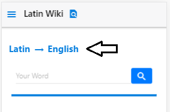
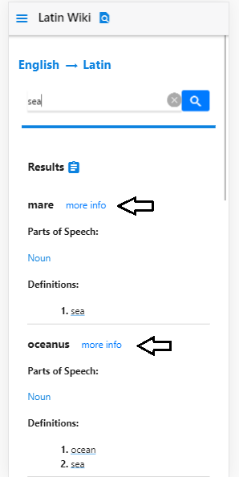
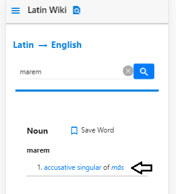

Latin
English
trending_flatEnglish
Latin
-
error_outline
Something went wrong...
No results were found.
Results
assignment{{word.latin}}
more infoParts of Speech:
{{partOfSpeech}} |Definitions:
- {{index + 1}}. {{definition}}
{{ bookmark }} {{bookmarkMessage}}
You have nothing saved currently. Go translate some words!
{{ item.input }} (translated from {{item.eng}})
arrow_drop_down arrow_drop_up ForgetYou have nothing in your history currently. Go translate some words!
{{ item.input }} (translated from {{item.eng}})
arrow_drop_down{{ item.input }} (translated from {{item.eng}})
arrow_drop_upAbout LatinWiki
LatinWiki is a web app that translates English to Latin and back while providing detailed information about your word's latin form. It informs of the word's part of speech, conjugation or declension, gender and more. LatinWiki also provides aesthetically pleasing and clear declension and conjugation charts for your words. LatinWiki seeks to help you define your and obtain relevant information important to your understanding of the word at the same time.
Contact Me
Email: halihuang22@gmail.com
Help
-
Press the arrow at the top where it says "English => Latin" or "Latin => English" to change which language you are translating from.
-
Type in your word or phrase where it says your word and press the search button or hit enter to begin your search.
-
Translating from English to Latin will give you a page of results. Click more info next to a result to learn more about it.
-
On word pages, you can click on any words highlighted blue to quickly search them.
-
You can also save and unsave a searched word by clicking on the bookmark below the search bar. View your saved result in the saved tab.

-
Your history of searched words can also be viewed in the History tab.